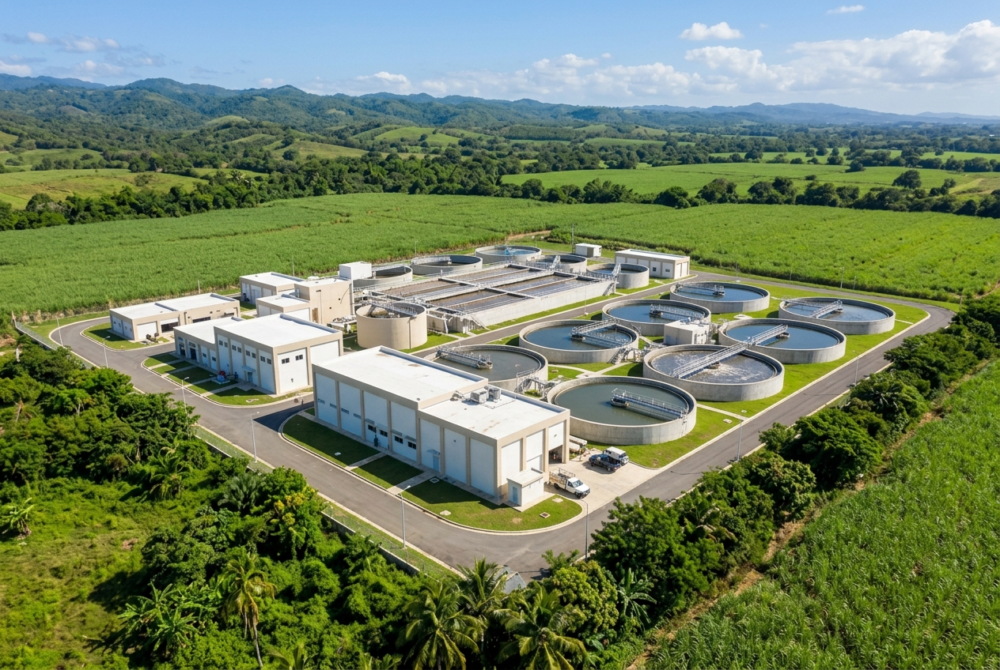
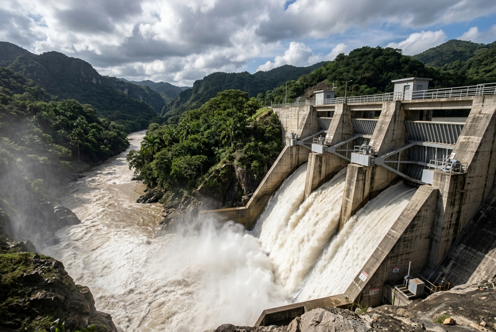

Planta de tratamiento de aguas residuales
01
Ubicación
Sto. Domingo Norte
Sistema
Tratamiento de aguas
Alcance
Diseño y construcción
Tipo
Infraestructura municipal

Esta agua vuelve limpia al río.
SOLSANIT — Saneamiento Ambiental
Veinte años diseñando, construyendo y manteniendo la infraestructura que República Dominicana necesita para funcionar.
Saneamiento ambiental, ingeniería sanitaria e hidráulica, plantas de tratamiento, redes y construcción — bajo un mismo equipo, de principio a fin.




Recolección, conducción y disposición responsable de aguas residuales y pluviales.
Diseño, construcción, adecuación, operación y mantenimiento de plantas de tratamiento.
Agua potable, alcantarillado, conducción, instalación y rehabilitación de redes existentes.
Obras civiles, edificaciones y modernización de instalaciones para clientes públicos y privados.

Ubicación
Sto. Domingo Norte
Sistema
Tratamiento de aguas
Alcance
Diseño y construcción
Tipo
Infraestructura municipal
Ubicación
República Dominicana
Sistema
Conducción hidráulica
Alcance
Instalación y rehabilitación
Tipo
Redes sanitarias

Ubicación
Av. Ecológica, Sto. Domingo
Sistema
Alcantarillado
Alcance
Excavación e interconexión
Tipo
Construcción
En 2006, SOLSANIT nació para responder a una necesidad concreta: República Dominicana requería una firma capaz de diseñar, construir y también quedarse a mantener su infraestructura de saneamiento.
Veinte años después, seguimos siendo el mismo equipo el que dibuja el plano, el que lo ejecuta en el terreno y el que responde cuando algo necesita mantenimiento. Esa continuidad — no un número — es lo que nos distingue.
Notas y criterios de ingeniería del equipo SOLSANIT.